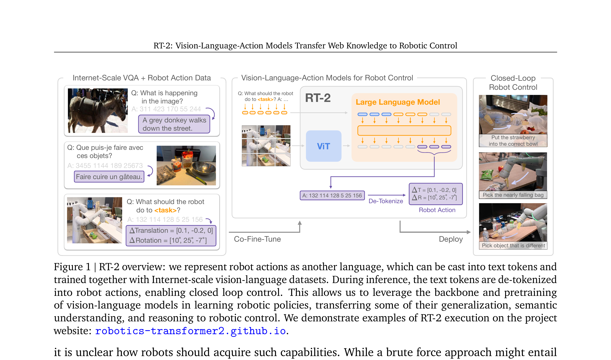

RT-2: Vision-Language-Action Models Transfer Web Knowledge to Robotic Control
Brohan 等 · 2023 · arXiv:2307.15818 · Zotero 5PYNLQIY
把机器人动作写成语言 token，让同一个 VLM 同时学习网页视觉语言任务与闭环控制。它不是 RL 论文，却是后续 VLA+RL 必须先站稳的基座。
§1 Introduction：为什么大模型“看懂网页”仍然不能直接控制机器人
RT-1 等大规模机器人策略已经能从多任务示范学习视觉控制，但泛化仍被机器人数据覆盖范围限制：真实轨迹昂贵，几乎不可能穷举物体类别、语言表达和抽象语义。与此同时，PaLI-X、PaLM-E 一类 VLM 在互联网图文上获得了丰富的常识与视觉概念，却只输出文本，不能直接给机器人发动作。
RT-2 的关键问题是：能否让同一个模型既保留网页预训练知识，又把低层动作当成一种“语言”输出？它把末端位姿、旋转和夹爪状态离散化为 token，与 VQA/图文任务共同 co-finetune。这样模型不是先生成文字计划再调用另一个控制器，而是从图像和指令直接输出可执行 token 序列。
展开原文 · 核心方法
“co-fine-tune ... on both robotic trajectory data and web-scale vision-language tasks”
§2 Related Work：RT-1、VLM 与语言规划器之间的位置
传统 language-conditioned policy 在机器人数据内学习语言与动作；RT-1 通过 tokenized action 和 Transformer 扩大多任务规模，却没有互联网知识。SayCan、PaLM-E 等用大模型做高层选择或规划，再由低层技能执行，语义强但系统分层。RT-2 将 VLM 本体直接变成 VLA，使网页语义梯度进入动作表示。
它不是 RL 工作，也没有通过在线失败恢复优化累计回报。RT-2 证明的是语义知识可以迁移到动作选择；它留下的缺口正是 VLA+RL 的起点：预训练模型知道“做什么”，但精确“怎么做”、如何在分布外状态纠错，仍主要受行为克隆数据约束。
§3 问题设定：SFT 到底漏掉了什么
VLA 预训练与 SFT 解决“从观测到动作的模仿”，但部署是闭环过程：动作会改变下一帧，错误会把策略带到演示没有覆盖的状态。网页预训练拥有语义知识，但普通机器人策略只会拟合低层动作；RT-2 要把两种能力放进同一输出空间。
输入是当前相机观测与语言指令，输出是离散化后的平移、旋转、夹爪与终止 token；动作和普通文本共享自回归词表。
展开原文 · 核心主张
“We express the actions as text tokens.”
§4 方法总览：反馈信号怎么走
上一节明确了状态、动作与反馈，现在沿论文原图追踪训练信号。重点不是背模块名，而是判断：哪部分保持预训练先验，哪部分真的被 RL 改写。

1. 把 7-DoF 连续动作离散化为文本 token
把连续 7-DoF 位姿与夹爪指令量化成离散 token，复用语言模型的词表与 next-token loss。动作因此能与自然语言共用解码器，但量化精度会直接限制控制分辨率。
输入是什么：当前任务提供的原始观测、指令、机器人状态或训练数据。先明确这些输入，才能判断后面的结论是否用了部署时拿不到的信息。
这一步究竟做什么：把连续 7-DoF 位姿与夹爪指令量化成离散 token，复用语言模型的词表与 next-token loss。动作因此能与自然语言共用解码器，但量化精度会直接限制控制分辨率。
输出到哪里：一组比原始输入更紧凑的内部特征；它不是最终动作或画面。这个结果会交给下一步“混合机器人轨迹与 Internet-scale VQA 数据”继续处理。
为什么不能省略：模型不能高效地直接在所有原始像素和长序列上推理；这一步把信息压成后续模块能处理、比较和复用的形式。
2. 混合机器人轨迹与 Internet-scale VQA 数据
训练 batch 混合机器人轨迹和 Internet-scale VQA/视觉语言数据。机器人数据教模型把场景映射为动作，网页数据保留物体语义与常识；混合比例决定是否发生 semantic forgetting。
输入是什么：来自上一步“把 7-DoF 连续动作离散化为文本 token”的产物：一组比原始输入更紧凑的内部特征；它不是最终动作或画面。本步骤还会按论文设置读取当前条件、时间步或训练信号。
这一步究竟做什么：训练 batch 混合机器人轨迹和 Internet-scale VQA/视觉语言数据。机器人数据教模型把场景映射为动作，网页数据保留物体语义与常识；混合比例决定是否发生 semantic forgetting。
输出到哪里：经过本步骤处理、含义更明确的中间结果。这个结果会交给下一步“共享 VLM 参数做自回归联合训练”继续处理。
为什么不能省略：学习算法只能从它见过的经历中改进；这一步决定训练数据是否覆盖成功、失败和恢复状态。
3. 共享 VLM 参数做自回归联合训练
同一 VLM 参数对文本答案和动作 token 做自回归训练。共享表示让网络知识迁移到机器人指令，但也意味着动作 loss 与语言 loss 会竞争容量，需要用任务标记区分输出空间。
输入是什么：来自上一步“混合机器人轨迹与 Internet-scale VQA 数据”的产物：经过本步骤处理、含义更明确的中间结果。本步骤还会按论文设置读取当前条件、时间步或训练信号。
这一步究竟做什么：同一 VLM 参数对文本答案和动作 token 做自回归训练。共享表示让网络知识迁移到机器人指令，但也意味着动作 loss 与语言 loss 会竞争容量，需要用任务标记区分输出空间。
输出到哪里：参数得到更新的模型，或能供下一轮训练使用的新监督信号。这个结果会交给下一步“推理时将 token 反解为动作并闭环执行”继续处理。
为什么不能省略：前面的数据或分数本身不会自动改变模型；必须通过损失函数把误差信号变成参数更新。
4. 推理时将 token 反解为动作并闭环执行
部署时解码动作 token、反量化为连续控制并闭环执行。每一步新图像重新进入模型，因而评测必须看整段 rollout；单步 token accuracy 不能代表错误后能否恢复。
输入是什么：来自上一步“共享 VLM 参数做自回归联合训练”的产物：参数得到更新的模型，或能供下一轮训练使用的新监督信号。本步骤还会按论文设置读取当前条件、时间步或训练信号。
这一步究竟做什么：部署时解码动作 token、反量化为连续控制并闭环执行。每一步新图像重新进入模型，因而评测必须看整段 rollout；单步 token accuracy 不能代表错误后能否恢复。
输出到哪里：一组比原始输入更紧凑的内部特征；它不是最终动作或画面。这是图中这条链路的最终产物，随后会进入真实执行、模型更新或指标评测。
为什么不能省略：模型不能高效地直接在所有原始像素和长序列上推理；这一步把信息压成后续模块能处理、比较和复用的形式。
§5 机制细拆：动作、价值与更新边界
上图给出了宏观流程，但真正决定训练是否稳定的是三个接口：动作以什么粒度出现、反馈怎样变成可学习信号、哪些参数允许被更新。
§6 目标函数：把直觉压缩成可检查的量
前一节说清了信号路径，这里把核心优化目标写成教学化公式。读公式时依次检查：回报影响谁、数据支持在哪里、预训练策略受到什么约束。
- $y_t$
- 语言或动作 token
- $I,x$
- 图像与任务指令
- $p_\theta$
- 共享 VLM 的自回归分布
PaLI-X 或 PaLM-E 视觉语言骨干与动作输出完全共享参数，通过 co-fine-tuning 保住网页知识并学习控制。
§7 训练与评测：数字是在什么条件下得到的
只看最终成功率会隐藏数据预算、仿真/真机差异和基座强弱。本节把论文的实验对象与比较关系放回同一张表。
| 策略与动作 | 输入是当前相机观测与语言指令，输出是离散化后的平移、旋转、夹爪与终止 token；动作和普通文本共享自回归词表。 |
|---|---|
| 训练反馈 | RT-2 没有 critic 或环境奖励。监督来自机器人轨迹中的动作 token，以及 VQA/语言任务中的文本 token。 |
| 更新方式 | PaLI-X 或 PaLM-E 视觉语言骨干与动作输出完全共享参数，通过 co-fine-tuning 保住网页知识并学习控制。 |
| 实验覆盖 | 模型最高扩展到 55B 参数；机器人数据沿用 RT-1 系列，评测约 6,000 次真机 rollout，分别考察熟悉任务、未见物体、未见语义和组合推理。 |
| 关键对照 | 相对只在机器人数据上训练的策略，RT-2 的主要优势是把网页语义迁移到动作选择；它并没有突破机器人数据没有覆盖的运动技能。 |
§8 结果怎么读：证据、因果与可迁移结论
论文进行了约 6,000 次机器人评测，报告了新物体、新指令和基础语义推理上的泛化提升。
相对只在机器人数据上训练的策略，RT-2 的主要优势是把网页语义迁移到动作选择；它并没有突破机器人数据没有覆盖的运动技能。
RT-2 给后续 VLA+RL 留下的核心问题是：语义先验已经很好，如何用闭环反馈修正执行，而不破坏这些先验。
§9 复现与工程检查
前一节判断了证据强度，复现时还要把训练信号对齐、时间尺度和数据统计逐项落地，否则“同名算法”也可能得到完全不同的结果。
- 先确认动作离散化边界与 token 顺序；混合数据比例必须避免语言任务淹没机器人动作；部署时要严格反量化并保持闭环频率。
- 先跑通不加 RL 的预训练/SFT 基线，并保存逐任务成功率与失败视频。
- 同时记录环境步数、真实墙钟时间、人工介入次数、更新次数和推理延迟。
- 把奖励、终止、action chunk mask 与归一化统计做成可视化单元测试。
§10 适用边界与研究启发
语义能力来自网页预训练，但可执行的物理技能仍主要受机器人数据覆盖范围限制。
RT-2 给后续 VLA+RL 留下的核心问题是：语义先验已经很好，如何用闭环反馈修正执行，而不破坏这些先验。